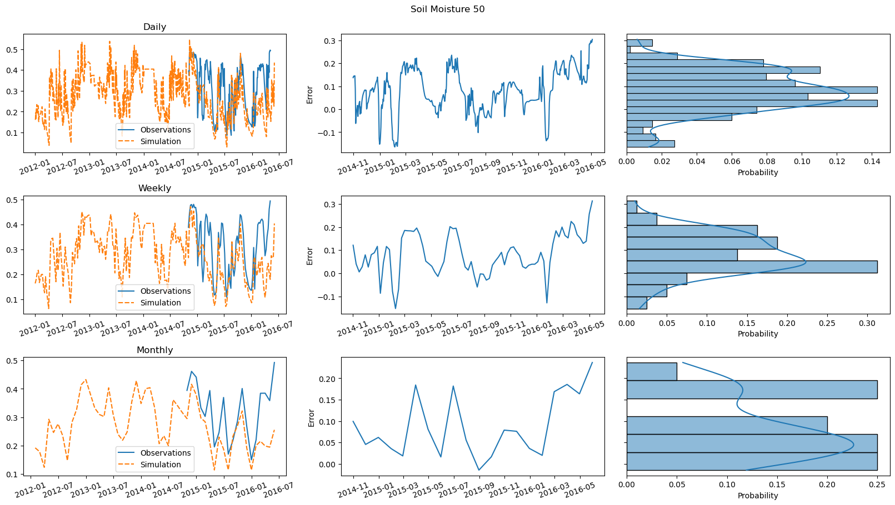

Example GEOtop Calibration Report¶
What follows is an example of GEOtop calibration report.
# Defaults
model_path = '../data/testbed/inputs'
timeout = 120
observations_path = '../data/testbed/observations/obs.csv'
parameters_path = '../data/parameters/testbed.csv'
default_parameters = {}
algorithm = 'Random'
popsize = 2
num_generations = 2
scheduler_file = None
num_cpus = 2
num_workers = 2
performance_report_filename='report.html'
# Parameters
model_path = "/scratch/scampane/MHPC-project/data/DOMES/inputs"
timeout = 150
observations_path = "/scratch/scampane/MHPC-project/data/DOMES/observations/obs.csv"
parameters_path = "/scratch/scampane/MHPC-project/data/parameters/all.csv"
algorithm = "NGO"
popsize = 128
num_generations = 32
scheduler_file = "/scratch/scampane/MHPC-project/scheduler_files/scheduler-Q61.json"
num_cpus = 256
num_workers = 32
performance_report_filename = "/scratch/scampane/MHPC-project/runs/short/DOMES-NGO-4096-256-DeW-performance-report.html"
import numpy as np
import pandas as pd
import matplotlib.pyplot as plt
import scrapbook as sb
import dask.config
from dask.distributed import Client, performance_report
from mhpc_project.utils import date_parser, kge_cmp, calibrate, delta_mim
from mhpc_project.parameters import UniformSoilParameters as Parameters
from mhpc_project.models import UniformSoilModel as Model
import mhpc_project.plots as plots
# Store dask config
sb.glue('dask_config', dask.config.config)
parameters = Parameters(parameters_path, default_parameters)
model = Model(model_path, store=False, timeout=timeout)
observations = pd.read_csv(observations_path,
parse_dates=[0],
date_parser=date_parser,
index_col=0)
if scheduler_file:
client = Client(scheduler_file=scheduler_file)
else:
client = Client()
client.wait_for_workers(n_workers=num_workers, timeout=240)
with performance_report(filename=performance_report_filename):
recommendation, predictions, log = calibrate(model,
parameters,
observations,
algorithm,
popsize,
num_generations,
client,
num_cpus)
sb.glue('loss', kge_cmp(predictions, observations))
sb.glue('log', [((x.generation, x.args[0]), l, t) for (x, l, t) in log])
(64_w,128)-aCMA-ES (mu_w=34.2,w_1=6%) in dimension 29 (seed=nan, Thu Feb 18 09:36:33 2021)
plot = plots.convergence([(x.generation, l) for x, l, _ in log if np.isfinite(l)])
plt.close(plot)
sb.glue('convergence_plot', plot, 'display')
for name, plot in plots.comparisons(predictions, observations).items():
plt.close(plot)
sb.glue(name + '_plot', plot, 'display')

report = delta_mim(parameters, [(x.args[0], l) for x, l, t in log if np.isfinite(l)])
report['best'] = parameters.from_instrumentation(recommendation)
sb.glue('report', report, 'pandas')
report.sort_values('delta', key=np.abs, ascending=False)
| delta | delta_conf | S1 | S1_conf | best | |
|---|---|---|---|---|---|
| FieldCapacity | 0.196860 | 0.016790 | 0.083046 | 0.231401 | 3.870706e-02 |
| ThetaRes | 0.180005 | 0.014483 | 0.104353 | 0.282825 | 2.985520e-03 |
| ThetaSat | 0.168758 | 0.015870 | 0.097108 | 0.266497 | 5.557729e-01 |
| DecayCoeffCanopy | 0.167036 | 0.012630 | 0.087294 | 0.237451 | 1.165855e+00 |
| NormalHydrConductivity | 0.163122 | 0.018452 | 0.043401 | 0.147470 | 1.975318e-04 |
| CanopyFraction | 0.162160 | 0.017316 | 0.054883 | 0.169293 | 8.927573e-01 |
| MinStomatalRes | 0.152129 | 0.013413 | 0.043169 | 0.110797 | 2.081448e+02 |
| AlphaVanGenuchten | 0.137440 | 0.014014 | 0.056531 | 0.136567 | 2.450772e-03 |
| NVanGenuchten | 0.136678 | 0.017649 | 0.039043 | 0.125220 | 1.827232e+00 |
| LSAI | 0.127544 | 0.017510 | 0.039181 | 0.119751 | 2.178355e+00 |
| SoilEmissiv | 0.125561 | 0.017766 | 0.041374 | 0.119356 | 4.216430e-01 |
| VegSnowBurying | 0.119362 | 0.021109 | 0.026987 | 0.086476 | 3.022595e+00 |
| ThermalCapacitySoilSolids | 0.117335 | 0.018992 | 0.025219 | 0.095252 | 3.709680e+06 |
| SoilAlbNIRWet | 0.116171 | 0.016200 | 0.025704 | 0.095070 | 6.082924e-01 |
| SoilAlbNIRDry | 0.112665 | 0.014766 | 0.040809 | 0.094023 | 3.240326e-01 |
| SoilAlbVisDry | 0.111565 | 0.015490 | 0.023665 | 0.097089 | 3.549442e-01 |
| ThermalConductivitySoilSolids | 0.109694 | 0.018087 | 0.030302 | 0.079683 | 2.883452e+00 |
| SoilAlbVisWet | 0.106393 | 0.018053 | 0.026151 | 0.059908 | 2.886453e-01 |
| VMualem | 0.104845 | 0.019058 | 0.021472 | 0.065113 | 2.914712e-01 |
| VegReflectVis | 0.104551 | 0.013805 | 0.015882 | 0.067012 | 5.010492e-01 |
| SpecificStorativity | 0.102199 | 0.018316 | 0.021701 | 0.078875 | 1.643646e-07 |
| RootDepth | 0.100619 | 0.018432 | 0.023663 | 0.080024 | 5.512460e+02 |
| CanDensSurface | 0.099391 | 0.017148 | 0.027862 | 0.076559 | 4.069320e+00 |
| WiltingPoint | 0.097252 | 0.013059 | 0.032982 | 0.074388 | 7.603242e-01 |
| SoilRoughness | 0.096809 | 0.015322 | 0.030851 | 0.062250 | 1.077662e+00 |
| VegTransVis | 0.088482 | 0.016014 | 0.014867 | 0.052614 | 2.124748e-01 |
| VegTransNIR | 0.077449 | 0.018123 | 0.012616 | 0.032653 | 4.469694e-01 |
| VegReflNIR | 0.068249 | 0.018172 | 0.009401 | 0.027690 | 1.406107e-01 |
| VegHeight | 0.037858 | 0.014848 | 0.003969 | 0.005968 | 9.226614e+02 |